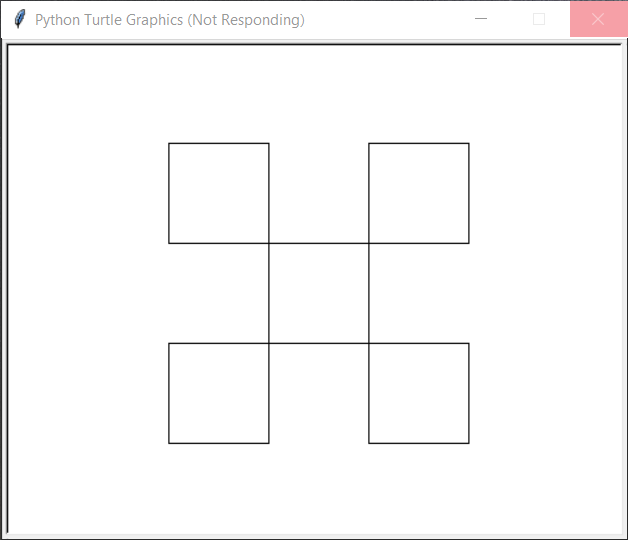

第6讲 绘制正多边形¶
Exercise¶
注意: - 使用整个星期完成下面的练习 - 本讲所有编程练习都要求练习者自行事先导入如下代码提供的方法和绘图设置 - 如果您复制粘贴下面的代码，请注意修正其中存在的一处错误再运行
from turtle import setup, reset, bye, pu, pd, bk, fd, left, right, st, ht，goto
setup(500, 400, 0, 0)
reset()
尝试按照下面列举的数据多次修改
setup(500, 400, 0, 0)方法接受的外部数据，观察代码执行的效果有什么变化。你能总结出setup方法接收的每一个外部数据的意义吗。在下面的代码单元格中以注释的形式写上你的回答。setup(400, 500, 0, 0)setup(800, 400, 0, 0)setup(400, 800, 0, 0)setup(500, 400, 200, 100)setup(500, 400, 200, 0)setup(500 ,400, 0, 200)
[9]:
# 在这里写上你的答案
#
#
根据你目前学过的内容，在下面的代码单元格中以注释的形式详细说明已经学过的下列方法分别来自哪一个方法（仓）库、每一个方法完成的功能、所接受的参数（外部数据）的个数以及每一个参数的在该方法中的作用，即当这个方法中的该参数发生变化时，这个方法执行后得到的效果有什么变化。
注：如果是默认的仓库，在仓库名列下写“default”。
[10]:
# 方法名：print
# 所在仓库：Default
# 方法完成的功能：向屏幕输出一段字符串
# 参数个数以及意义：1个参数，表示要输出的字符串
# 方法名: input
# 所在仓库：
# 方法完成的功能：
# 参数个数以及意义：
# 方法名: type
# 所在仓库：
# 方法完成的功能：
# 参数个数以及意义：
# 方法名: int
# 所在仓库：
# 方法完成的功能：
# 参数个数以及意义：
# 方法名: random
# 所在仓库：
# 方法完成的功能：
# 参数个数以及意义：
# 方法名: randint
# 所在仓库：
# 方法完成的功能：
# 参数个数以及意义：
# 方法名: goto
# 所在仓库：
# 方法完成的功能：
# 参数个数以及意义：
# 方法名: setup
# 所在仓库：
# 方法完成的功能：
# 参数个数以及意义：
# 方法名: seth
# 所在仓库：
# 方法完成的功能：
# 参数个数以及意义：
使用
turtle绘图库中已经学过的方法，在一个或多个代码单元格中编写任意行数的代码，绘制出按下面排列的一组(5个)正方形。 具体要求：
最中间的正方形位于画布（绘图区）的正中央
每一个正方形的边长为80
你的代码可以使用也可以不使用
while循环语句如果你没有使用
while循环语句，请给你所写的每一行代码进行注释，解释每一行代码的作用。如果你使用了
while循环语句，你仅需要给while循环内的每一行代码进行注释，解释每一行代码的作用。但需要整个代码结尾以注释的形式详细介绍你在使用while循环时碰到了哪些错误，你是怎么发现和修正这些错误并最终让程序正确运行的。
[1]:
import itertools
from turtle import setup, reset, bye, pu, pd, bk, fd, left, right, st, ht, goto
setup(500, 400, 0, 0)
[2]:
reset()
from turtle import speed, seth
speed(0)
side_length = 80
def square(x, y, length):
pu()
goto(x, y)
seth(0)
pd()
for i in range(4):
fd(length)
left(90)
def triangle(x, y, length):
pu()
goto(x, y)
seth(-120)
pd()
for i in range(3):
fd(length)
left(120)
center_xs = [i for i in range(-1, 2)]
center_ys = [i for i in range(-1, 2)]
center_xys = []
for center_x in center_xs:
for center_y in center_ys:
if (center_x + center_y) % 2 == 0:
center_xys.append((center_x, center_y))
print(center_xys)
for (x, y) in center_xys:
square((x-0.5)*side_length, (y-0.5)*side_length, side_length)
ht()
[(-1, -1), (-1, 1), (0, 0), (1, -1), (1, 1)]
[3]:
GIFT_VALUE1 = 120 * 1.7321 / 2
length = 120
reset()
triangle(0, GIFT_VALUE1, length)
triangle(-length/2, 0, length)
triangle(length/2, 0, length)
ht()
[4]:
bye()
使用
turtle绘图库中已经学过的方法，在一个或多个代码单元格中编写任意行数的代码，绘制出如下图所示的图形。图形描述：图片中所描述的图形可以有两种构图方式：
它可以认为是一个大的正三角形和其内部的一个倒立的小的正三角形组合而成，其中大三角形的边长是小三角形边长的2倍；
它也可以认为仅由3个小的正三角形按照一定的规律排列而成
具体绘制要求：
图中的大三角形的边长是240，相应的小三角形的变长是120
整个图形在绘图区中的具体位置可随意设定，但底边需要水平不能倾斜且不能有任何部分超出绘图区而导致大三角形的显示不完整
大三角形中倒立的小三角形最上方的一条边（也可以理解为最上方的小三角形的底边）也必须是水平不能倾斜
所有的三角形必须是正三角形。
不要求代码中出现
while语句请给你所写的每一行代码进行注释，解释每一行代码的作用。
可以有多种途径完成此图的绘制，你仅需要提供一种途径的代码即可，如果你有兴趣，欢迎你提供多套代码。
提示：
下面代码声明的变量和值作为礼物送给你，它们会帮助你精确的控制所要绘制的三角形之间的位置关系，你可以选择其中的一个使用在你的代码中。如果你觉得这个礼物对你有帮助，请在代码中以注释的形式感谢它。同时，你可以尝试将下面代码中出现的这个礼物（神秘）数字（
1.7321）换成别的数字（例如1.5或者2）, 重新运行代码，观察绘制的图形有什么变化？
GIFT_VALUE1 = 120 * 1.7321 / 2 GIFT_VALUE2 = 120 * 1.7321 GIFT_VALUE3 = 1.7321 / 2
[ ]:
[ ]: